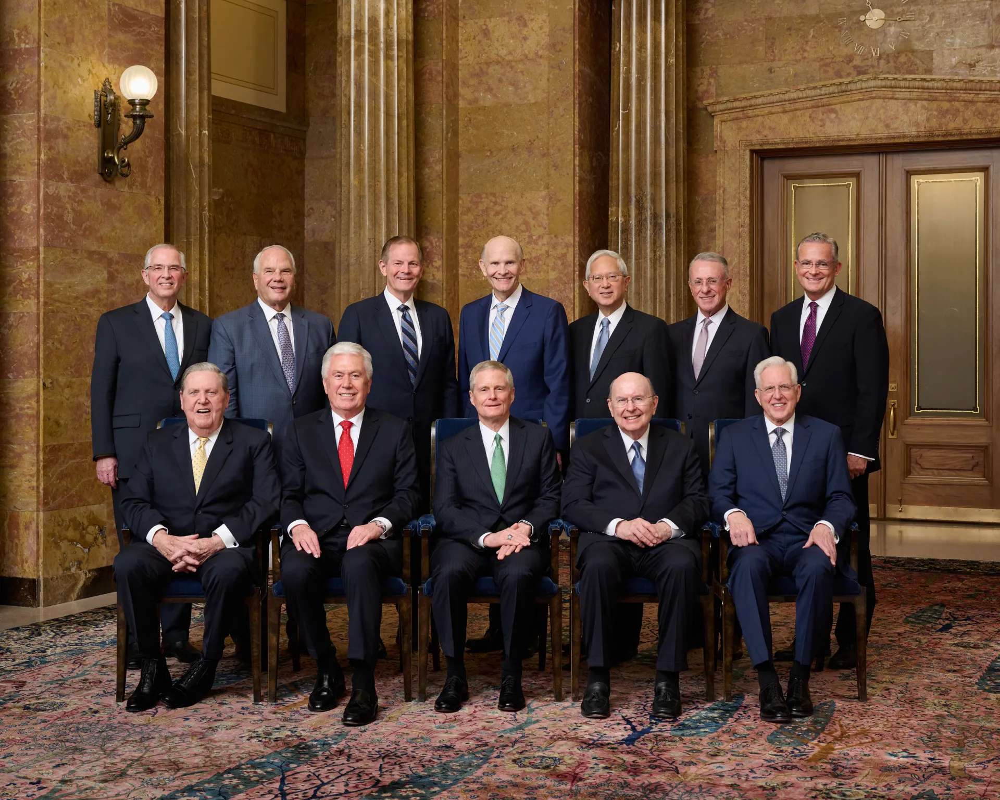

Home
My Favorite General Conference Talks by Each Apostle
- Elder Holland
- Motions of a Hidden Fire
- Lifted Up upon the Cross
- Elder Uchtdorf
- Our Heartfelt All
- A Higher Joy
- Elder Bednar
- "Abide in Me, and I in You; Therefore Walk with Me"
- In the Path of Their Duty
- Elder Cook
- Be One with Christ
- Hearts Knit in Righteousness and Unity
- Elder Christofferson
- The Sealing Power
- Our Relationship with God
- Elder Anderson
- Temples, Houses of the Lord Dotting the Earth
- Tithing: Opening the Windows of Heaven
- Elder Rasband
- Hosanna to the Most High God
- To Heal the World
- Elder Stevenson
- Bridging the Two Great Commandments
- Love, Share, Invite
- Elder Renlund
- The Powerful, Virtuous Cycle of the Doctrine of Christ
- Jesus Christ is the Treasure
- Elder Gong
- Love is Spoken Here
- Trust Again
- Elder Soares
- Covenant Confidence through Jesus Christ
- In Awe of Christ and His Gospel
- Elder Kearon
- God's Intent is to Bring You Home
- He is Risen with Healing in His Wings: We Can Be More Than Conquerors

Top of Page